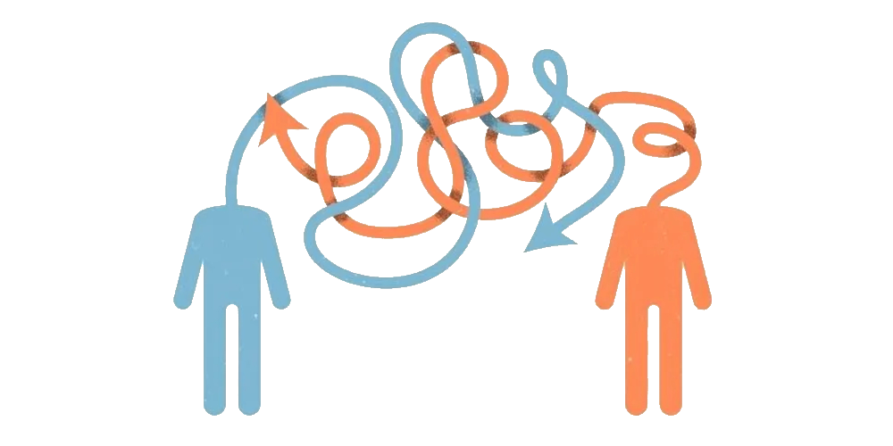
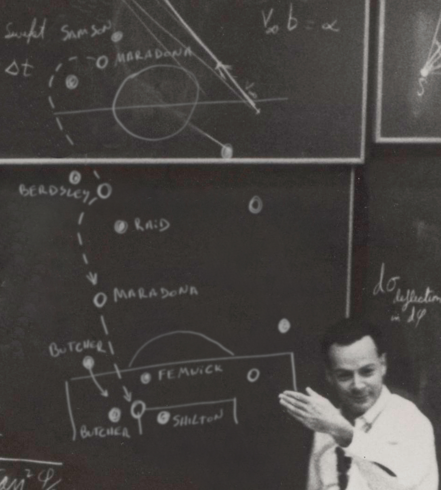
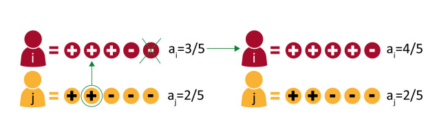
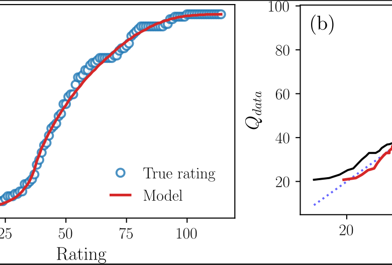
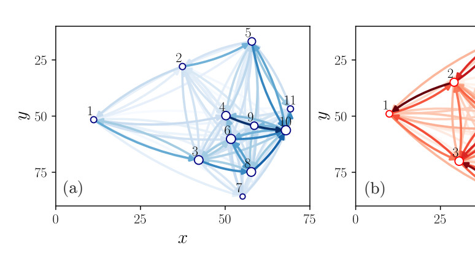

En los ecosistemas digitales contemporáneos, las noticias y sus repercusiones se propagan casi de forma instantánea. Nuestra investigación apunta a caracterizar los patrones espacio-temporales que emergen de estos flujos de información. Para ello, analizamos grandes conjuntos de datos provenientes de redes sociales y medios de comunicación, y desarrollamos marcos matemáticos que explican el comportamiento colectivo a partir de interacciones elementales entre individuos.
Nuestro trabajo teórico se apoya en la mecánica estadística, la dinámica no lineal y la teoría de redes complejas, mientras que nuestra metodología empírica incorpora una amplia variedad de algoritmos de aprendizaje automático para el procesamiento y análisis de datos.
La dinámica de formación de opinión al interior de grupos y a través de redes sociales ha atraído considerable atención en los últimos años. Los patrones colectivos emergentes suelen surgir de formas no triviales, debido a la complejidad inherente de los individuos y, de manera crucial, a sus interacciones. Para investigar estos fenómenos, empleamos modelos computacionales que incorporan diversos mecanismos de comportamiento, con el fin de revelar las condiciones bajo las cuales surgen dichas dinámicas emergentes. Complementamos estas simulaciones con desarrollos analíticos orientados a derivar ecuaciones que caractericen los procesos subyacentes. Además, trabajamos con modelos de agentes multidimensionales basados en datos para estudiar cómo, en contextos polarizados, los individuos tienden a adoptar opiniones cada vez más extremas y correlacionadas.
La diseminación de información a través de las redes sociales se ha convertido en una característica central de la comunicación contemporánea, dado que un número creciente de individuos recurre a estas plataformas como su principal fuente de noticias. Los caminos por los que circula la información —moldeados por algoritmos, interacciones entre usuarios y estructura de la red— desempeñan un papel crucial en la configuración de la opinión pública sobre una amplia gama de temas. Comprender cómo se propagan los contenidos, cómo los usuarios se exponen a ellos y cómo emergen los patrones de visibilidad es, por tanto, esencial para caracterizar el panorama socio-informacional más amplio. Nuestra investigación examina estos procesos de difusión mediante el análisis de grandes conjuntos de datos y el desarrollo de marcos teóricos y computacionales que nos permiten identificar los mecanismos que gobiernan el alcance, la amplificación y la formación de cámaras de eco informacionales.
En esta línea de investigación, analizamos y modelamos la dinámica de propagación de la información a múltiples escalas, desde la evolución temporal de los temas y su distribución geográfica hasta la identificación de unidades informacionales más finas, como citas textuales o memes. Al examinar cómo estos elementos emergen, se transforman y se difunden a través de distintos ecosistemas mediáticos, buscamos descubrir los mecanismos que estructuran el flujo de información en entornos complejos. Nuestro enfoque combina el análisis de datos a gran escala con la modelización matemática y computacional, lo que nos permite caracterizar patrones de amplificación, decaimiento y recombinación que dan forma al paisaje informacional. A través de este marco, buscamos comprender mejor cómo evolucionan las narrativas, cómo ciertos fragmentos ganan prominencia y cómo estos procesos influyen en última instancia sobre la atención colectiva y el discurso público.
En esta área de investigación, buscamos identificar los componentes socioculturales y cognitivos que moldean la frecuencia y la evolución del uso de las palabras, y modelar los patrones regulares que se despliegan a lo largo de siglos como expresiones de la cognición colectiva. Mediante el análisis de grandes corpus que abarcan largos períodos históricos, utilizamos herramientas estadísticas y computacionales para detectar tendencias sistemáticas, innovaciones léxicas y cambios en los campos semánticos. Estos métodos nos permiten caracterizar cómo las estructuras lingüísticas emergen, se estabilizan o desaparecen, y cuantificar la influencia de las dinámicas sociales, el cambio tecnológico y la transmisión cultural en la evolución del lenguaje. A través de este marco, buscamos comprender no solo las trayectorias temporales de palabras individuales, sino también los mecanismos más amplios que gobiernan la adaptación lingüística en sociedades complejas.

En esta línea de investigación, investigamos los procesos de toma de decisiones en deportes competitivos mediante un enfoque integrado que combina recolección de datos, análisis estadístico y modelización computacional. Estudiamos cómo atletas y equipos toman decisiones estratégicas bajo condiciones de incertidumbre, presión temporal e interacción con rivales. Nuestra metodología se apoya en la ciencia de redes para caracterizar estructuras de pase y organización espacial en fútbol, en modelos estadísticos y cognitivos para analizar patrones de decisión en ajedrez, y en marcos de procesos estocásticos para examinar la dinámica de los intercambios y las acciones punto a punto en deportes como el vóley y el pádel. A través de estas herramientas, buscamos identificar los principios que rigen la toma de decisiones individual y colectiva, y comprender cómo influyen en el rendimiento y los resultados competitivos.

Pedraza, Lucía, et al. "Analytical insights from a model of opinion formation based on persuasive argument theory" (2025)
Chacoma Andres, et al. "Ranking football teams via the higher-order decomposition of performance networks" (2026)
Chacoma Andres, et al. "Identification and optimization of high-performance passing networks in football" (2025)Departamento de Física, FCEyN, UBA.
Pabellón I, 1º piso, Ciudad Universitaria (1428) - CABA - Argentina.
(+54 11) 5285-7565/7566
Por consultas escribir al Prof. Pablo Balenzuela: balen@df.uba.ar